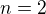
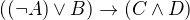

Logic and Proof
2 Propositional Logic
2.1 A Puzzle
The following puzzle, titled "Malice and Alice," is from George J. Summers' Logical Deduction Puzzles.
Alice, Alice's husband, their son, their daughter, and Alice's brother were involved in a murder. One of the five killed one of the other four. The following facts refer to the five people mentioned:
- A man and a woman were together in a bar at the time of the murder.
- The victim and the killer were together on a beach at the time of the murder.
- One of Alice's two children was alone at the time of the murder.
- Alice and her husband were not together at the time of the murder.
- The victim's twin was not the killer.
- The killer was younger than the victim.
Which one of the five was the victim?
Take some time to try to work out a solution. (You should assume that the victim's twin is one of the five people mentioned.) Summers' book offers the following hint: "First find the locations of two pairs of people at the time of the murder, and then determine who the killer and the victim were so that no condition is contradicted."
2.2 A Solution
If you have worked on the puzzle, you may have noticed a few things. First, it is helpful to draw a diagram, and to be systematic about searching for an answer. The number of characters, locations, and attributes is finite, so that there are only finitely many possible "states of affairs" that need to be considered. The numbers are also small enough so that systematic search through all the possibilities, though tedious, will eventually get you to the right answer. This is a special feature of logic puzzles like this; you would not expect to show, for example, that every even number greater than two can be written as a sum of primes by running through all the possibilities.
Another thing that you may have noticed is that the question seems to presuppose that there is a unique answer to the question, which is to say, of all the states of affairs that meet the list of conditions, there is only one person who can possibly be the killer. A priori, without that assumption, there is a difference between finding some person who could have been the victim, and show that that person had to be the victim. In other words, there is a difference between exhibiting some state of affairs that meets the criteria, and demonstrating conclusively that no other solution is possible.
The published solution in the book not only produces a state of affairs that meets the criterion, but at the same time proves that this is the only one that does so. It is quoted below, in full.
From [1], [2], and [3], the roles of the five people were as
follows: Man and Woman in the bar, Killer and Victim on the beach, and
Child alone.
Then, from [4], either Alice's husband was in the bar and Alice was
on the beach, or Alice was in the bar and Alice's husband was on the
beach.
If Alice's husband was in the bar, the woman he was with was his
daughter, the child who was alone was his son, and Alice and her
brother were on the beach. Then either Alice or her brother was the
victim; so the other was the killer. But, from [5], the victim had a
twin, and this twin was innocent. Since by Alice and her brother could
only be twins to each other, this situation is impossible. Therefore
Alice's husband was not in the bar.
So Alice was in the bar. If Alice was in the bar, she was with her brother or her son.
If Alice was with her brother, her husband was on the beach with one
of the two children. From [5], the victim could not be her husband,
because none of the others could be his twin; so the killer was her
husband and the victim was the child he was with. But this situation
is impossible, because it contradicts [6]. Therefore, Alice was not
with her brother in the bar.
So Alice was with her son in the bar. Then the child who was alone was her daughter. Therefore, Alice's husband was with Alice's brother on the beach. From previous reasoning, the victim could not be Alice's husband. But the victim could be Alice's brother because Alice could be his twin.
So Alice's brother was the victim and Alice's husband was the killer.
This argument relies on some "extralogical" elements, for example, that a father cannot be younger than his child, and that a parent and his or her child cannot be twins. But the argument also involves a number of common logical terms and associated patterns of inference. In the next section, we will focus on some of the key logical terms occurring in the argument above, words like "and," "or," "not," and "if … then."
Our goal is to give an account of the patterns of inference that
govern the use of those terms. To that end, using the methods of
symbolic logic, we will introduce variables  ,
,  ,
,  , … to
stand for fundamental statements, or propositions, and symbols
, … to
stand for fundamental statements, or propositions, and symbols
 ,
,  ,
,  , and
, and  to stand for "and," "or," "not,"
and "if … then … ," respectively. Doing so will let us focus on the way
that compound statements are built up from basic ones using the
logical terms, while abstracting away from the specific content. We
will also adopt a stylized notation for representing inferences as
rules: an the like inscription
to stand for "and," "or," "not,"
and "if … then … ," respectively. Doing so will let us focus on the way
that compound statements are built up from basic ones using the
logical terms, while abstracting away from the specific content. We
will also adopt a stylized notation for representing inferences as
rules: an the like inscription
indicates that statement is a logical consequence of
and .
2.3 Rules of Inference
2.3.1 Implication
The first pattern of inference we will discuss, involving the "if … then …" construct, can be hard to discern. Its use is largely implicit in the solution above. The inference in the fourth paragraph, spelled out in greater detail, runs as follows:
If Alice was in the bar, Alice was with her brother or son.
Alice was in the bar.
Alice was with her brother or son.
This rule is sometimes known as modus ponens, or "implication elimination," since it tells us how to use an implication in an argument. As a rule, it is expressed as follows:
Read this as saying that if you have a proof of  , possibly
from some hypotheses, and a proof of , possibly from hypotheses,
then combining these yields a proof of , from the hypotheses in
both subproofs.
, possibly
from some hypotheses, and a proof of , possibly from hypotheses,
then combining these yields a proof of , from the hypotheses in
both subproofs.
The rule for deriving an "if … then" statement is more subtle. Consider the beginning of the third paragraph, which argues that if Alice's husband was in the bar, then Alice or her brother was the victim. Abstracting away some of the details, the argument has the following form:
Suppose Alice's husband was in the bar.
Then …
Then …
Then Alice or her brother was the victim.
Thus, if Alice's husband was in the bar, then Alice or her brother was the victim.
This is a form of hypothetical reasoning. On the supposition that
holds, we argue that holds as well. If we are successful, we
have shown that implies , without supposing . In other
words, the temporary assumption that holds is "canceled" by making
it explicit in the conclusion.

The hypothesis is given the label  ; when the introduction rule is
applied, the label indicates the relevant hypothesis. The line
over the hypothesis indicates that the assumption has been "canceled"
by the introduction rule.
; when the introduction rule is
applied, the label indicates the relevant hypothesis. The line
over the hypothesis indicates that the assumption has been "canceled"
by the introduction rule.
2.3.2 Conjunction
As was the case for implication, other logical connectives are generally characterized by their introduction and elimination rules. An introduction rule shows how to establish a claim involving the connective, while an elimination rule shows how to use such a statement that contains the connective to derive others.
Let us consider, for example, the case of conjunction, that is, the word "and." Informally, we establish a conjunction by establishing each conjunct. For example, informally we might argue:
Alice's brother was the victim.
Alice's husband was the killer.
Therefore Alice's brother was the victim and Alice's husband was the killer.
The inference seems almost too obvious to state explicitly, since the word "and" simply combines the two assertions into one. Informal proofs often downplay the distinction. In symbolic logic, the rule reads as follows:
The two elimination rules allow us to extract the two components:
Alice's husband was in the bar and Alice was on the beach.
So Alice's husband was in the bar.
Or:
Alice's husband was in the bar and Alice was on the beach.
So Alice's was on the beach.
In symbols, these patterns are rendered as follows:
Here the and  stand for "left" and "right".
stand for "left" and "right".
2.3.3 Negation and Falsity
In logical terms, showing "not A" amounts to showing that A leads to a contradiction. For example:
Suppose Alice's husband was in the bar.
…
This situation is impossible.
Therefore Alice's husband was not in the bar.
This is another form of hypothetical reasoning, similar to that used in establishing an "if … then" statement: we temporarily assume A, show that leads to a contradiction, and conclude that "not A" holds. In symbols, the rule reads as follows:

The elimination rule is dual to these. It expresses that if we have both "A" and "not A," then we have a contradiction. This pattern is illustrated in the informal argument below, which is implicit in the fourth paragraph of the solution to "Malice and Alice."
The killer was Alice's husband and the victim was the child he was with.
So the killer was not younger than his victim.
But according to [6], the killer was younger than his victim.
This situation is impossible.
In symbolic logic, the rule of inference is expressed as follows:
Notice also that in the symbolic framework, we have introduced a new
symbol,  . It corresponds to natural language phrases like "this
is a contradiction" or "this is impossible."
. It corresponds to natural language phrases like "this
is a contradiction" or "this is impossible."
What are the rules governing ? In the proof system we will
introduce in the next chapter, there is no introduction rule; "false"
is false, and there should be no way to prove it, other than extract
it from contradictory hypotheses. On the other hand, the system
provides a rule that allows us to conclude anything from a
contradiction:
The elimination rule also has the fancy Latin name, ex falso sequitur quodlibet, which means "anything you want follows from falsity."
This elimination rule is harder to motivate from a natural language perspective, but, nonetheless, it is needed to capture common patterns of inference. One way to understand it is this. Consider the following statement:
For every natural number  , if is prime and greater than 2, then
is odd.
, if is prime and greater than 2, then
is odd.
We would like to say that this is a true statement. But if it is true,
then it is true of any particular number . Taking , we have
the statement:
If 2 is prime and greater than 2, then 2 is odd.
In this conditional statement, both the antecedent and succedent are false. The fact that we are committed to saying that this statement is true shows that we should be able to prove, one way or another, that the statement 2 is odd follows from the false statement that 2 is prime and greater than 2. The ex falso neatly encapsulates this sort of inference.
Notice that if we define  to be
to be  , then the rules
for negation introduction and elimination are nothing more than
implication introduction and elimination, respectively. We can think
of expressed colorfully by saying "if is true, then pigs
have wings," where "pigs have wings" is stands for .
, then the rules
for negation introduction and elimination are nothing more than
implication introduction and elimination, respectively. We can think
of expressed colorfully by saying "if is true, then pigs
have wings," where "pigs have wings" is stands for .
Having introduced a symbol for "false," it is only fair to introduce a symbol for "true." In contrast to "false," "true" has no elimination rule, only an introduction rule:
Put simply, "true" is true.
2.3.4 Disjunction
The introduction rules for disjunction, otherwise known as "or," are
straightforward. For example, the claim that condition [3] is met in
the proposed solution can be justified as follows:
Alice's daughter was alone at the time of the murder.
Therefore, either Alice's daughter was alone at the time of the murder, or Alice's son was alone at the time of the murder.
In symbolic terms, the two introduction rules are as follows:

Here, again, the and stand for "left" and "right".
The disjunction elimination rule is trickier, but it represents a natural form of case-based hypothetical reasoning. The instances that occur in the solution to "Malice and Alice" are all special cases of this rule, so it will be helpful to make up a new example to illustrate the general phenomenon. Suppose, in the argument above, we had established that either Alice's brother or her son was in the bar, and we wanted to argue for the conclusion that her husband was on the beach. One option is to argue by cases: first, consider the case that her brother was in the bar, and argue for the conclusion on the basis of that assumption; then consider the case that her son was in the bar, and argue for the same conclusion, this time on the basis of the second assumption. Since the two cases are exhaustive, if we know that the conclusion holds in each case, we know that it holds outright. The pattern looks something like this:
Either Alice's brother was in the bar, or Alice's son was in the bar.
Suppose, in the first case, that her brother was in the bar. Then … Therefore, her husband was on the beach.
On the other hand, suppose her son was in the bar. In that case, … Therefore, in this case also, her husband was on the beach.
Either way, we have established that her husband was on the beach.
In symbols, this pattern is expressed as follows:
What makes this pattern confusing is that it requires two instances of
nested hypothetical reasoning: in the first block of parentheses, we
temporarily assume A, and in the second block, we temporarily assume
B. When the dust settles, we have established C outright.
There is another pattern of reasoning that is commonly used with "or," as in the following example:
Either Alice's husband was in the bar, or Alice was in the bar.
Alice's husband was not in the bar.
So Alice was in the bar.
In symbols, we would render this rule as follows:
We will see in the next chapter that it is possible to derive this rule from the others. As a result, we will not take this to be a fundamental rule of inference in our system.
2.3.5 If and only if
In mathematical arguments, it is common to say of two statements,
and , that " holds if and only if holds." This assertion is
sometimes abbreviated " iff ," and means simply that implies
and implies . It is not essential that we introduce a new
symbol into our logical language to model this connective, since the
statement can be expressed, as we just did, in terms of "implies" and
"and." But notice that the length of the expression doubles because
and are each repeated. The logical abbreviation is therefore
convenient, as well as natural.
The conditions of "Malice and Alice" imply that Alice is in the bar if and only if Alice's husband is on the beach. Such a statement is established by arguing for each implication in turn:
I claim that Alice is in the bar if and only if Alice's husband is on the beach.
To see this, first suppose that Alice is in the bar.
Then …
Hence Alice's husband is on the beach.
Conversely, suppose Alice's husband is on the beach.
Then …
Hence Alice is in the bar.
Notice that with this example, we have varied the form of presentation, stating the conclusion first, rather than at the end of the argument. This kind of "signposting" is common in informal arguments, in that is helps guide the reader's expectations and foreshadow where the argument is going. The fact that formal systems of deduction do not generally model such nuances marks a difference between formal and informal arguments, a topic we will return to below.
The introduction is modeled in natural deduction as follows:
The elimination rules for iff are unexciting. In informal language, here is the "left" rule:
Alice is in the bar if and only if Alice's husband is on the beach.
Alice is in the bar.
Hence, Alice's husband is on the beach.
The "right" rule simply runs in the opposite direction.
Alice is in the bar if and only if Alice's husband is on the beach.
Alice's husband is on the beach.
Hence, Alice is in the bar.
Rendered in natural deduction, the rules are as follows:
2.3.6 Proof by Contradiction
We saw an example of an informal argument that implicitly uses the introduction rule for negation:
Suppose Alice's husband was in the bar.
…
This situation is impossible.
Therefore Alice's husband was not in the bar.
Consider the following argument:
Suppose Alice's husband was not on the beach.
…
This situation is impossible.
Therefore Alice's husband was on the beach.
At first glance, you might think this argument follows the same pattern as the one before. But a closer look should reveal a difference: in the first argument, a negation is introduced into the conclusion, whereas in the second, it is eliminated from the hypothesis. Using negation introduction to close the second argument would yield the conclusion "It is not the case that Alice's husband was not on the beach." The rule of inference that replaces the conclusion with the positive statement that Alice's husband was on the beach is called a proof by contradiction. (It also has a fancy name, reductio ad absurdum, "reduction to an absurdity.")
It may be hard to see the difference between the two rules, because we commonly take the statement "Alice's husband was not not on the beach" to be a roundabout and borderline ungrammatical way of saying that Alice's husband was on the beach. Indeed, the rule is equivalent to adding an axiom that says that for every statement A, "not not A" is equivalent to A.
There is a style of doing mathematics known as "constructive mathematics" that denies the equivalence of "not not A" and A. Constructive arguments tend to have much better computational interpretations; a proof that something is true should provide explicit evidence that the statement is true, rather than evidence that it can't possibly be false. We will discuss constructive reasoning in a later chapter. Nonetheless, proof by contradiction is used extensively in contemporary mathematics, and so, in the meanwhile, we will use proof by contradiction freely as one of our basic rules.
In natural deduction, proof by contradiction is expressed by the following pattern:
The assumption is canceled at the final inference.
2.4 The Language of Propositional Logic
The language of propositional logic starts with symbols , , ,
… which are intended to range over basic assertions, or
propositions, which can be true or false. Compound expressions are
built up using parentheses and the logical symbols introduced in the
last section. For example,
is an example of a propositional formula.
When writing expressions in symbolic logic, we will adopt the an order of operations which allow us to drop superfluous parentheses. When parsing an expression:
- negation binds most tightly
- then conjunctions and disjunctions, from right to left
- and finally implications and bi-implications.
So, for example, the expression is understood as 
For example, suppose we assign the following variables:
- : Alice's husband was in the bar
- : Alice was on the beach
- : Alice was in the bar
 : Alice's husband was on the beach
: Alice's husband was on the beach
Then the statement "either Alice's husband was in the bar and Alice was on the beach, or Alice was in the bar and Alice's husband was on the beach would be rendered as
Sometimes the appropriate translation is not so straightforward, however. Because natural language is more flexible and nuanced, a degree of abstraction and regimentation is needed to carry out the translation. Sometimes different translations are arguably reasonable. In happy situations, alternative translations will be logically equivalent, in the sense that one can derive each from the other using purely logical rules. In less happy situations, the translations will not be equivalent, in which case the original statement is simply ambiguous, from a logical point of view. In cases like that, choosing a symbolic reprensetation helps clarify the intended meaning.
Consider, for example, a statement like "Alice was with her son on the beach, but her husband was alone." We might choose variables as follows:
- : Alice was on the beach
- : Alice's son was on the beach
- : Alice's husband was alone
In that case, we might represent the statement in symbols as . Using the word "with" may seem to connote more that the fact that Alice and her son were both on the beach; for example, it seems to connote that they aware of each others' presence, interacting, etc. Similarly, although we have translated the word "but" and "and," the word "but" also convey information; in this case, it seems to emphasize a contrast, while in other situations, it can be used to assert a fact that is contrary to expectations. In both cases, then, the logical rendering models certain features of the original sentence while abstracting others.
2.5 Exercises
Here is another (gruesome) logic puzzle by George J. Summers, called ``Murder in the Family.''
Murder occurred one evening in the home of a father and mother and their son and daughter. One member of the family murdered another member, the third member witnessed the crime, and the fourth member was an accessory after the fact.
- The accessory and the witness were of opposite sex.
- The oldest member and the witness were of opposite sex.
- The youngest member and the victim were of opposite sex.
- The accessory was older than the victim.
- The father was the oldest member.
- The murderer was not the youngest member.
Which of the four—father, mother, son, or daughter—was the murderer?
Solve this puzzle, and write a clear argument to establish that your answer is correct.
Using the mnemonoic
F(Father),M(Mother),D(Daughter),S(Son),M(Murderer),V(Victim),W(Witness),A(Accessory),O(Oldest),Y(Youngest), we can define propositional variables likeFM(Father is the Murderer),DV(Daughter is the Victim),FO(Father is Oldest),VY(Victim is Youngest), etc. Notice that only the son or daughter can be the youngest, and only the mother or father can be the oldest.With these conventions, the first clue can be represented in other words, if the father or son was the accessory, then the mother or daughter was the witness, and vice-versa. Represent the other five clues in a similar manner.
Representing the fourth clue is tricky. Try to write down a formula that describes all the possibilities that are not ruled out by the information.
Consider the following three hypotheses:
- Alan likes kangaroos, and either Betty likes frogs or Carl likes hamsters.
- If Betty likes frogs, then Alan doesn't like kangaroos.
- If Carl likes hamsters, then Betty likes frogs.
Write a clear argument to show that these three hypotheses are contradictory.